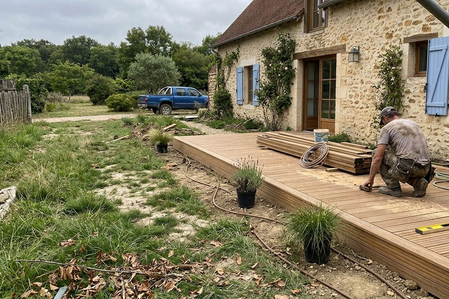
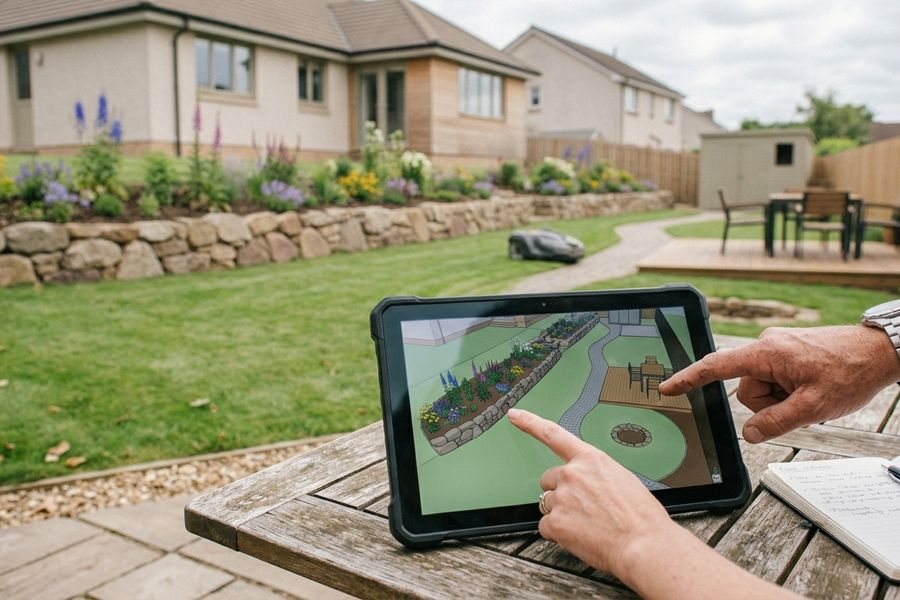
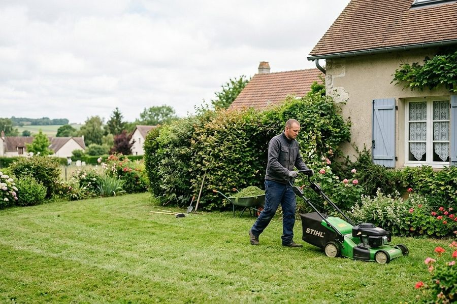
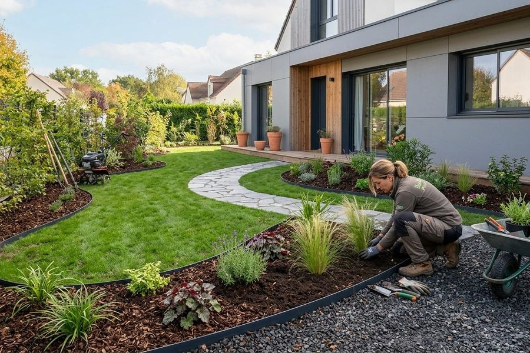

Créer, équiper et entretenir votre jardin
Création de jardins, terrasses, clôtures, pelouses, massifs minéraux, arrosage automatique, entretien et élagage.



Donner forme à votre jardin
Un jardin sur mesure
Vous faites construire une maison ou emménagez dans une maison ancienne ? Nous créons des espaces extérieurs qui correspondent à vos besoins et à vos envies.
- Écoute de vos demandes
- Croquis de votre futur jardin
- Aménagement une fois vos propositions validées
Des terrasses qui vivent avec le sol
Spécialiste de la pose de terrasses sur sol meuble, installées sur plots réglables.
- Terrasses en bois et composite anti-dérapant, avec les marques Piveteau Bois et Vivre en Bois
- Clôtures et palissades en bois et composite
- Portillons pour des entrées et sorties piétonnes
Pelouses et massifs

Une belle pelouse, base du jardin
Une belle pelouse est la base essentielle d'un jardin agréable à vivre.
- Semis de gazon à planter à l'automne, pour en profiter dès le printemps suivant
- Gazon de placage pour un résultat immédiat

Paillage en ardoise, galets, briques pilées
Nous vous accompagnons dans la création de massifs, en particulier de massifs minéraux.
- Paillage en ardoises
- Galets
- Briques pilées
Arrosage et éclairage

Un jardin arrosé sans y penser
Pose de systèmes d'arrosage automatique pour votre jardin.
- Dispositifs domotiques : contrôle du système à distance depuis votre smartphone
- Contrats d'entretien du système d'arrosage

Une ambiance cosy pour vos soirées
Nous nous chargeons de l'installation de votre éclairage extérieur afin de créer une ambiance cosy pour vos soirées d'été.
Entretien et élagage

Un jardin toujours verdoyant et plaisant
Barbey Paysages vous propose des contrats d'entretien, ou des prestations ponctuelles selon vos besoins.
- Contrats d'entretien annuels
- Prestations ponctuelles
- Particuliers, copropriétés, associations syndicales libres et entreprises

Un élagueur diplômé dans l'équipe
Pour vous offrir une gamme complète de services, l'équipe compte un élagueur diplômé et l'entreprise a investi dans du matériel dédié.
Un projet en tête ? Parlons-en.
Décrivez votre besoin : nous vous répondons pour établir un devis.